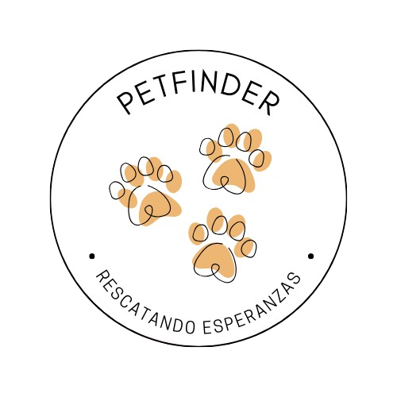

<ion-content class="fondo">
  <div class="container">
    <!-- Imagen izquierda tipo mockup -->
    <div class="imagen-izquierda">
      
    </div>

    <!-- Sección central con logo y botón -->
    <div class="contenido-central">
      <!-- Logo arriba del texto -->
      
      <h1 class="titulo">PetFinder</h1>

      <!-- Botón reutilizado -->
      <ion-button class="botonInicio" (click)="login()">Iniciar Sesión</ion-button>
    </div>
  </div>
</ion-content>